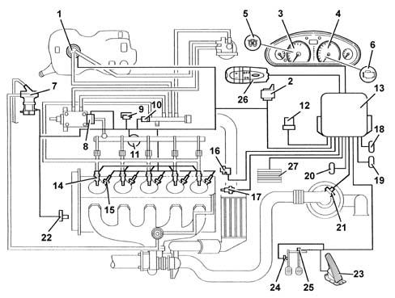

Specifications
- Path
- Descriptions > 10 ENGINE > 1060 DIESEL FUEL INJECTION SYSTEM > Specifications
- Kind
- system description
- Applies to
- engines: 2.4 JTD 20V; all production periods
- Interactive page
- https://sloeber94.github.io/elrnDB-lThss/en/#/840633
Applies to: engines: 2.4 JTD 20V; all production periods
FUNCTION
The EDC-16C8 Common Rail system is a high pressure electronic injection circuit for fast, direct injection diesel engines.
Its main features are:
- availability of high pressure (up to 1400 bars)
- possibility of modulating pressures between 150 bars up to a maximum service pressure of 1400 bars, regardless of engine speed and load
- ability to work at high engine rpms (up to 5000 rpm in full load conditions);
- injection control precision (injection advance and duration)
- reduction in fuel consumption
- reduction in emissions.
Main system functions are essentially as follows:
- fuel temperature control
- engine coolant temperature control
- control of amount of fuel injected
- Idle speed check
- Fuel cut-off during over-run
- cylinder balance check when idling
- control of anti-judder function
- exhaust fume control during acceleration
- exhaust gas recirculation control (E.G.R.)
- maximum torque limit control
- maximum speed limit control
- control of glow plugs
- control of climate control system activation (where fitted)
- auxiliary fuel pump check
- cylinder position check
- main and pilot injection advance check
- Injection pressure closed cycle check
- electrical balance check
- supercharging pressure control
- self-diagnostics
- Body Computer connector for LANCIA CODE

- 1. Auxiliary electric fuel pump
- 2. Heater plugs control unit
- 3. Speedometer
- 4. Rev counter
- 5. Heater plugs warning light
- 6. Injection warning light
- 7. E.G.R. valve
- 8. Fuel pressure regulator
- 9. Excess pressure sensor
- 10. Fuel temperature sensor
- 11. Fuel pressure sensor
- 12. Relay
- 13. Engine Management Node
- 14. Injectors
- 15. Heater plugs
- 16. Rpm sensor
- 17. Engine coolant temperature sensor
- 18. Climate control system connector
- 19. Diagnostic connector
- 20. Body Computer connector for LANCIA CODE
- 21. Air flow meter
- 22. Timing sensor
- 23. Accelerator pedal potentiometer
- 24. Clutch pedal switch
- 25. Brake pedal switch
- 26. Cruise Control (where fitted)
- 27. Engine coolant temperature control unit